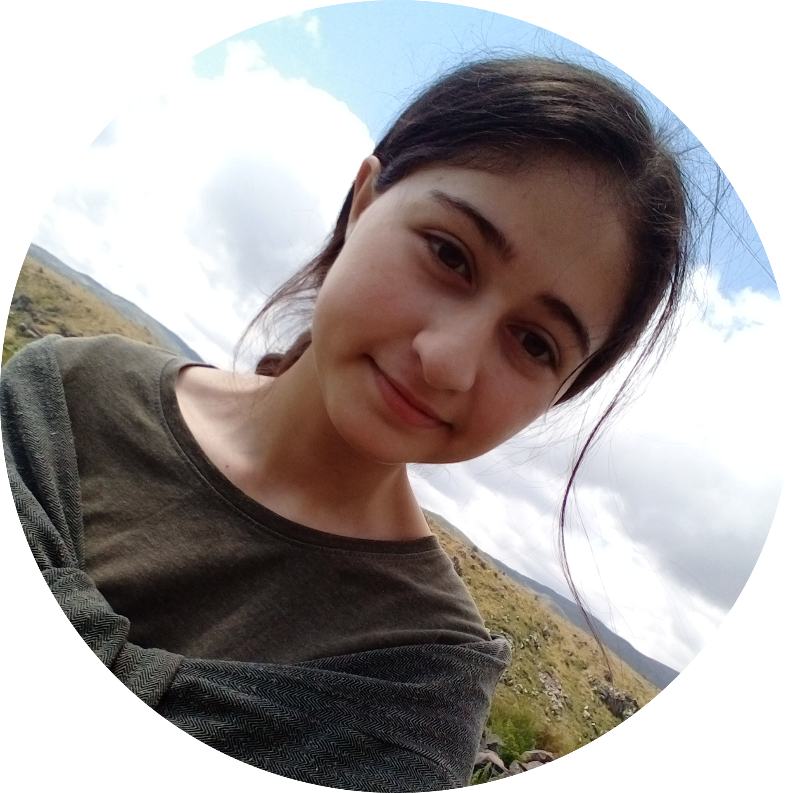

Նունե Ավագյան

Անուն:
Նունե Ավագյան
Տարիք:
15 տարեկան
Գտնվելու վայր:
Հայստանի Հանրապետություն, Տավուշի մարզ, Ներքին Կարմիրաղբյուր գյուղ
Իմ մասին
Ես Նունե Ավագյանն եմ։ Ծնվել եմ 2006 թվականի մարտի 6-ին, Տավուշի մարզի Ներքին Կարմիրաղբյուր գյուղում։
Այժմ սովորում եմ տեղի Լևոն Ադամյանի անվան միջնակարգ դպրոցի տասներորդ դասարանում, ունեմ գերազանց առաջադիմություն։
Արմաթ ինժեներական լաբորատորիայի սան եմ, զբաղվում եմ բասկետբոլով և վազքով, մասնակցում եմ անգլերենի օնլայն դասընթացների։
Օճառագործ եմ․ ընկերներիս և ուսուցչուհուս հետ հիմնել ենք "Հյուն" ձեռագործ օճառների արտադրությունը (Հյուն/Hyun)։
Ծավալում եմ բնապահպանական գործունեություն։
| Սիրելի ֆիլմեր🎬 |
Սիրելի գրքեր🕮 |
| Կարիբյանի ծովահենները |
Րաֆֆի "Խենթը" |
| Հարրի Փոթեր |
Մարկ Արեն "Անատոլիական պատմություն" |
| Մենք ենք, մեր սարերը |
Շիրվանզադե "Քաոս" |
Հետաքրքրություններ
- Տիեզերք
- Ազգային պար
- Լուսանկարչություն
- Ֆիզիկա
- Նկարչություն
- Հայոց պատմություն
- Ընթերցանություն
- Սպորտ
- Ծրագրավորում